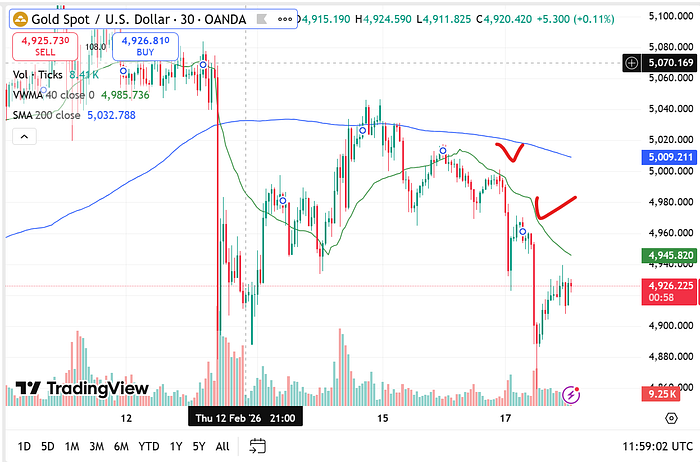
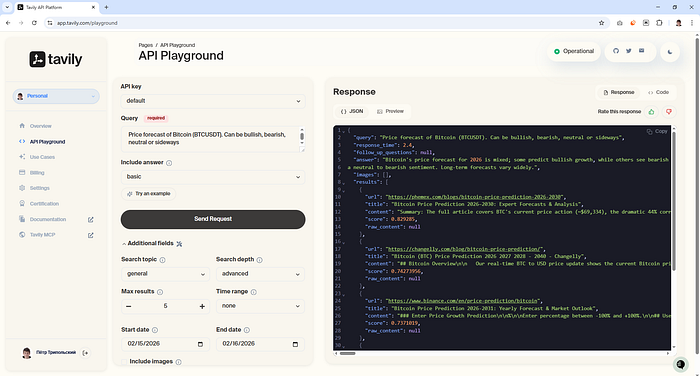
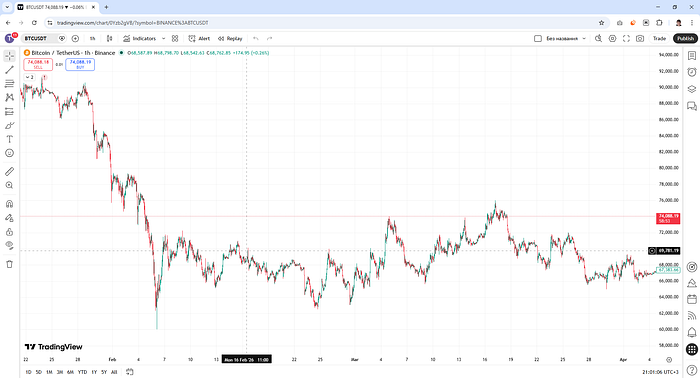
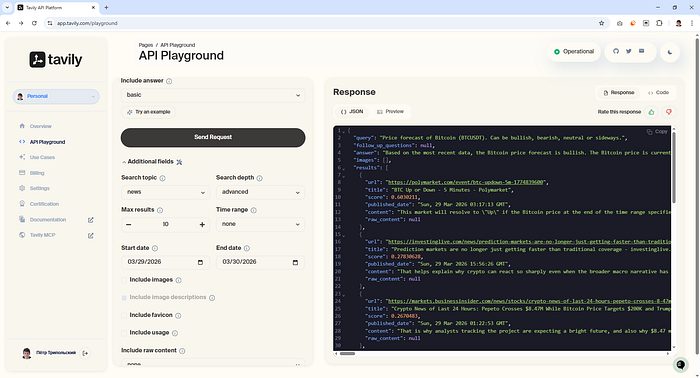
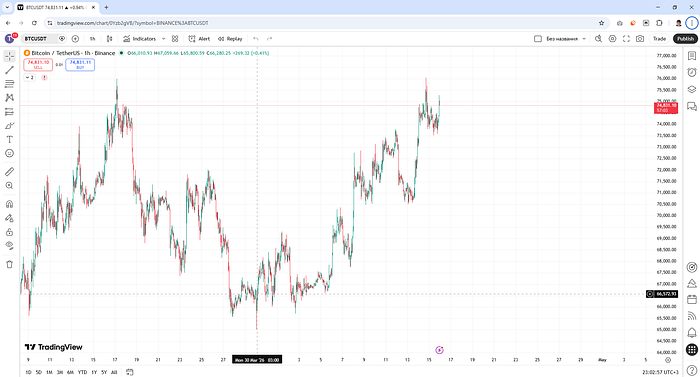
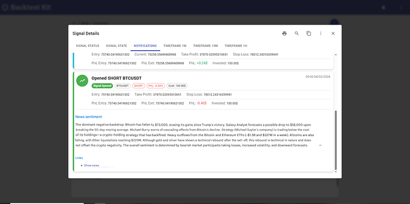
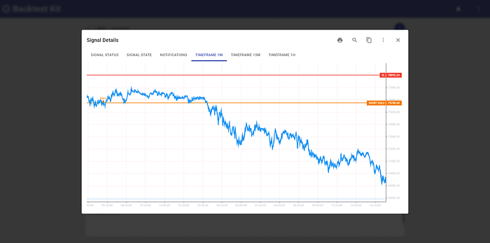
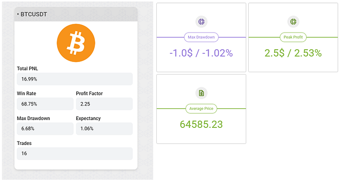

🧠 AI News Sentiment Analysis as a Trading Signal 🐻🔄🐂
The source code discussed in this article is published in this GitHub repository.
When trading the market, you can observe situations where moving averages sharply reverse direction. An indicator is calibrated on historical data and assumes a stable regime. Technical analysis recommends using different sets of indicators when the market regime changes — but this doesn't work.

But wait — how did they ever work in the first place? Is this a scam of planetary scale, and what's actually going on?
What Changed?
News sentiment defines the regime. The indicator works inside the regime. Sentiment being changed every 24 hours or shorter.
 https://cn.wsj.com/articles/在萬物皆可下注的時代-我們都在-監控局勢-1abd25ab
https://cn.wsj.com/articles/在萬物皆可下注的時代-我們都在-監控局勢-1abd25ab
A Practical Guide to Identifying Sentiment
You need vector search over news. It's easy to implement using Scrapy + PostgreSQL + PgVector or Scrapy + MongoDB Atlas Vector Search. See VectorEmbeddings + Cosine Distance. I personally use a SaaS solution that fits within the free tier — tavily.com. Perplexity Search API also works. Below is a guide on how to structure your search queries to extract news sentiment.
1. Score as a Sorting Criterion, Not a Filter
The word "Trump" doesn't equal "Bitcoin" — but the implication is that he's speculating in the market. Maximum-score results will be flagged as direct advertising. Zero-score results don't mention Bitcoin at all. You want the near-zero score — that's exactly what shapes market sentiment.
Think of it like product placement: Corona beer in Fast & Furious, or a Sony smartphone in a James Bond film.
2. Domain Takes Priority Over Search Query
Searching for "SEC crypto enforcement action lawsuit" is a mistake. Market sentiment is created by specific domains and blogs — the market pioneers. If they don't repost a new SEC filing, nobody sees it. The SEC can show up at a blogger's door with a subpoena, but it's the blogger's post that moves the crowd.
3. Time Takes Priority Over Publication Meaning
Averaging kills directionality — morning optimism cancels out evening pessimism. Sentiment collapses into noise. A news item both precedes an impulse and sustains the continuation of price movement through a cascade. The criterion for the presence of a cascade is a statistically significant increase in the number of publications per unit of time. Each individual publication does not reflect the future in isolation — the future is the synergistic effect of publications combined.
4. Find the Fundamental Narrative Being Priced In — Don't Invent Your Own
It is critically important to use VectorEmbeddings + Cosine Distance rather than an LLM for sentiment search. An LLM will see the keyword "Overbought RSI" and hallucinate a market move from its own knowledge. The task is not to interpret meaning — it's to find the sentiment that authoritative participants are embedding into the market. See RAG Embedding Models.
5. Volume of Publications Increases Noise
You can build a well-crafted system for detecting market sentiment in publications — but the sources themselves may have no audience. What needs calibration is not the prompt, but the set of authorities whose recommendations actually influence retail traders.
Important
LLM and vector news search must be physically separated. Vector search should be performed against the concept of "forecast/outlook," while the LLM should analyze market sentiment. Otherwise, the output will not reflect the fundamental trend being priced in — preceded by a shift in market participant sentiment — but rather an interpretation of technical analysis indicators.
Testing the Hypothesis
Case 1. Neutral-Bearish Trend
Using the recommendations above, I constructed a search query. Tavily has a built-in LLM that produces a short summary across results.
- Search query result: neutral-bearish sentiment

- Market reaction:

Case 2. Bullish Sentiment
Repeating the experiment on a different date:
- Search query result: bullish sentiment

- Market reaction:

Recommendations on Search Time Window
1. Not all news agencies include a publication time. To avoid look-ahead bias, those sources must be excluded from the dataset. Among them:
In Tavily's database, these are assigned a timestamp of Thu, ?? Jan ???? 00:00:00 GMT. To filter them out, cast to UTC — otherwise your local timezone will be used as an offset:
const hour = dayjs(publishedDate).utc().get("hour");
const minute = dayjs(publishedDate).utc().get("minute");
if (hour === 0 && minute === 0) {
console.warn(`fetchNews search invalid publishedDate query=${query} url=${url} from=${from} to=${to}`)
return false;
}
2. Query data from -2 days back and filter the last 24 hours on your side.
Tavily uses a date without a time component when searching, so on the boundary between 23:59 and 00:00 you will lose publications. Even with a perfect site parser, distributed CDN databases are a problem: the same news article reaches readers at different times as server capacity becomes available.
3. Don't try to outrun the market.
Averaging kills directionality: morning optimism cancels out evening pessimism, and sentiment drifts toward noise. But if you take a window shorter than 24 hours, it becomes unclear how to interpret sentiment: Trump is bombing Iran — but it's unclear whether Bitcoin will drop to zero or rally. A 24-hour window is optimal for understanding context and cutting through noise.
Backtest
All of the above recommendations were successfully automated. The AI agent identifies a news signal:

And holds the position until the news sentiment is exhausted:

For risk management, a statistically unreachable hard stop is set alongside a trailing take-profit.
Why Indicators Don't Work
Traders try to tune a trading regime over a month — but sentiment alternates every day: bearish, bullish, bullish, bearish. As a result, both the bullish and bearish strategies each land at 50/50.
What Can Be Improved
If you exit on a sentiment change, some profit is lost due to the news parser's latency. My solution: exit on a 3% pullback from the position's maximum PnL.

This means a shortfall of 3% PnL multiplied across 10 positions — that's +30% additional profit on top of the existing 16%. Given that the news sentiment is predictable at the time the position is open: do you think it's worth trying to use an indicator for the exit signal?